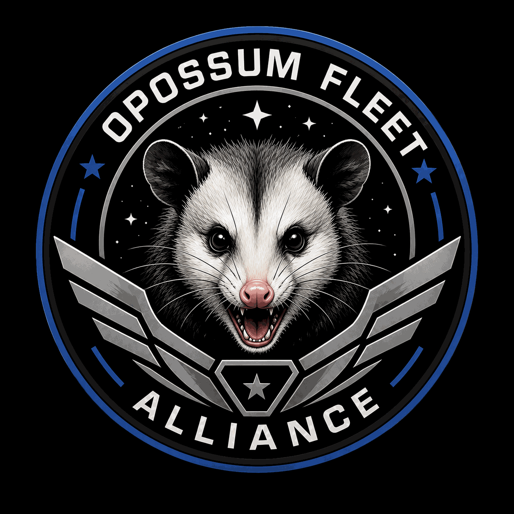

Publicly available
The card links to its GitHub repository. Source, documentation, and release details are available there to the extent provided by that project.

LET THERE BE SOURCEPROJECT GUT · SOFTWARE WORKSHOPPractical tools. Native code. No unnecessary noise.
Welcome to the workshop of PROJECT GUT: a growing collection of utilities, experiments, and software built to solve real problems. Published work links directly to its GitHub repository. Projects not yet published are clearly marked IN PROGRESS.
Browse the workshop. Repository links are provided only for projects with a known GitHub destination; work that is not published is identified as in progress.
Try another search term or reset the filters.
i Catalog accuracy matters. “Published on GitHub” entries link to a repository. “In progress” entries are not presented as published projects.
The card links to its GitHub repository. Source, documentation, and release details are available there to the extent provided by that project.
The project is being developed, tested, or prepared for release. No GitHub publication is implied, and no download link is shown.
Software should earn its place. Keep it understandable, respect the machine it runs on, preserve user control, and say plainly what is finished—and what is not.
Good work is rarely made in isolation. This workshop is shaped by human curiosity and a collection of useful collaborators.
For research, drafting, problem-solving, and helping turn ideas into practical plans.
Architecture, code review, and a second set of eyes when the details matter.
A collaborative crew for engineering, design, security, research, quality assurance, Linux infrastructure, Android, continuity, and creative work.